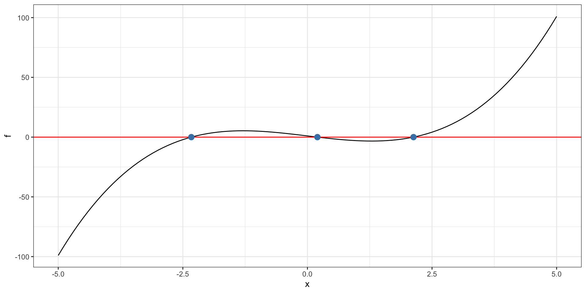

newton = function(f, fp, x, tol) {
for (i in 1:100) {
x = x - f(x) / fp(x)
if (abs(f(x)) < tol) {
return(x)
}
}
return(x)
}Newton-Raphson
Overview
univariate Newton-Raphson
- If \(a\) satisfies \(f(a) = 0\), \(a\) is said to be a “fixed point” or “root” of the function
- Newton-Raphson is a “root-finding” method
- Based on first order approximation of a function, \(\ f(a) \approx f(x) + f'(x)(a - x)\)
Near fixed points, the first order approximation is:
\[ 0 \approx f(x) + f'(x)(a - x). \]
We are trying to find \(a\), so if \(f'(x)\) invertible, we rearrange
\[ a = x - \frac{f(x)}{f'(x)} \]
. . .
and the procedural update is
\[ x_{n+1} = x_n - \frac{f(x_n)}{f'(x_n)} \]
Code example
In practice, we tolerate close solutions, i.e. \(a\) such that \(f(a) \approx 0\).
f = function(x) {
return(x ^ 3 - 5 * x + 1)
}
fp = function(x) {
return(3 * (x ^ 2) - 5.0)
}
newton(f, fp, -2.0, 1e-14)[1] -2.330059fis the function we are finding a root of.
Where we start matters

What can go wrong
derivative not continuous at the root
If \(f'(x_n)=0\), can’t proceed
iterates can “cycle” rather than converge to the solution
If \(f'(x_n)\) is small, but not zero, approximate solutions can diverge to infinity.
Sensitive to initial point \(x_0\)
Example: math
Beta-binomial
\[ X \sim Binomial(n, p) \]
\[ p \sim Beta(\alpha, \beta) \]
This data-generative process models a set of \(N\) binomial experiments, each possibly having their own local \(p_i\), and local \(n_i\) for \(i \in \{1, \ldots N\}\).
. . .
Example:
Schuckers, ME “Using the Beta-binomial distribution to assess performance of a biometric identification device” International Journal of Image and Graphics, vol. 3, no. 3, July 2003
. . .
Data:
| id | n | success |
|---|---|---|
| 1 | 9 | 3 |
| 2 | 9 | 0 |
| 3 | 8 | 8 |
| 4 | 6 | 6 |
| 5 | 9 | 8 |
Beta-binomial
\[ f_x(\mathbf{x}|\mathbf{p}, \mathbf{n}) = \prod_{i = 1}^{N} {n_i \choose{x_i}} p_i^{x_i}(1-p_i)^{n_i-x_i} \]
where \(\mathbf{x} = \{x_i \}\), \(\mathbf{p} = \{ p_i \}\) and \(\mathbf{n} = \{n_i \}\).
\[ f_p(\mathbf{p} | \alpha, \beta) = \prod_{i = 1}^{N} \frac{p_i^{\alpha - 1} (1-p_i)^{\beta - 1}}{B(\alpha, \beta)} \]
where \(B(\alpha, \beta) = \frac{\Gamma(\alpha) \Gamma(\beta)}{\Gamma(\alpha+\beta)}\).
Note
- \(\Gamma\) is the
gammafunction (read?gammaand wikipedia). beta()is the R function for \(B(\alpha, \beta)\).
. . .
Fundamentally, we are interested in the underlying Beta distribution that the \(p_i\) are drawn from. We don’t care about the individual \(p_i\) themselves. We integrate out \(\mathbf{p}\),
\[ \begin{aligned} f_x(\mathbf{x}|\mathbf{n}, \alpha, \beta) &= \int f_x(\mathbf{x}, \mathbf{p} | \mathbf{n}, \alpha, \beta) \ d\mathbf{p}\\ &= \int f_x(\mathbf{x}|\mathbf{p}, \mathbf{n}) f_p(\mathbf{p} | \alpha, \beta) \ d\mathbf{p} \end{aligned} \]
Integrating out the nuisance parameters continued
\[ \begin{aligned} \int f_x(\mathbf{x}|\mathbf{p}, \mathbf{n}) f_p(\mathbf{p} | \alpha, \beta) \ d\mathbf{p} &= \int \prod_{i = 1}^{N} {n_i \choose{x_i}} \frac{p_i^{x_i + \alpha - 1} (1-p_i)^{n_i - x_i +\beta - 1}}{B(\alpha, \beta)} \end{aligned} d \mathbf{p} \]
Conjugacy! This is proportional to a Beta distribution, hence
\[ \begin{aligned} f_x(\mathbf{x}|\mathbf{n}, \alpha, \beta) &= \prod_{i = 1}^N {n_i \choose x_i} \frac{B(x_i + \alpha, n_i - x_i +\beta)}{B(\alpha, \beta)}\\ &= \prod_{i = 1}^N {n_i \choose x_i} \frac{\Gamma(\alpha+\beta)}{\Gamma(\alpha) \Gamma(\beta)} \frac{\Gamma(x_i + \alpha)\Gamma(n_i -x_i + \beta)}{\Gamma(n_i + \alpha + \beta)} \end{aligned} \]
. . .
This in fact our likelihood! We can still simplify by pulling out the part that isn’t indexed by \(i\),
\[ L(\alpha, \beta) = \left(\frac{\Gamma(\alpha+\beta)}{\Gamma(\alpha) \Gamma(\beta)}\right)^N \cdot \prod_{i = 1}^N {n_i \choose x_i} \frac{\Gamma(x_i + \alpha)\Gamma(n_i -x_i + \beta)}{\Gamma(n_i + \alpha + \beta)} \]
Log-likelihood
\[ \log L = N \left(\log \Gamma(\alpha+\beta) - \log \Gamma(\alpha) -\log\Gamma(\beta) \right)+\\ \sum_{i=1}^N \log {n_i \choose x_i} + \log \Gamma(x_i + \alpha) + \log \Gamma(n_i -x_i + \beta) - \log {\Gamma(n_i + \alpha + \beta)} \]
. . .
We want to maximize the log-likelihood.
. . .
Gradient of log-likelihood
- derivative of log-Gamma function is the digamma function, often denoted by the Greek \(\psi\) (“psi”).
\[ \frac{\partial}{\partial \alpha} \log L = N \left[\psi(\alpha + \beta) - \psi(\alpha)\right] + \sum_{i=1}^N \psi(x_i + \alpha) - \psi(n_i + \alpha + \beta) \]
\[ \frac{\partial}{\partial \beta}\log L = N \left[\psi(\alpha + \beta) - \psi(\beta)\right] + \sum_{i=1}^N \psi(n_i - x_i + \beta) - \psi(n_i + \alpha + \beta) \]
Jacobian
- second derivative of log-Gamma function is the trigamma function, often denoted by the Greek \(\psi_1\) (“psi”) with a subscript “1”.
\[ \frac{\partial^2}{\partial \alpha^2} \log L = N \left[\psi_1(\alpha + \beta) - \psi_1(\alpha)\right] + \sum_{i=1}^N \psi_1(x_i + \alpha) - \psi_1(n_i + \alpha + \beta) \]
\[ \frac{\partial^2}{\partial \beta^2}\log L = N \left[\psi_1(\alpha + \beta) - \psi_1(\beta)\right] + \sum_{i=1}^N \psi_1(n_i - x_i + \beta) - \psi_1(n_i + \alpha + \beta) \]
- Same thing but with trigamma functions!
. . .
\[ \frac{\partial^2}{\partial \alpha \partial \beta}\log L = N \left[\psi_1(\alpha + \beta)\right] - \sum_{i=1}^N \psi_1(n_i + \alpha + \beta) \]
In general, the Jacobian,
\[ J=\left[\begin{array}{ccc} \dfrac{\partial f_{1}(\mathbf{x})}{\partial x_{1}} & \cdots & \dfrac{\partial f_{1}(\mathbf{x})}{\partial x_{n}} \\ \vdots & \ddots & \vdots \\ \dfrac{\partial f_{m}(\mathbf{x})}{\partial x_{1}} & \cdots & \dfrac{\partial f_{m}(\mathbf{x})}{\partial x_{n}} \end{array}\right] \]
Example: code
multivariate Newton-Raphson
The same intuition applies, but in higher dimensions.
Let \(\mathbf{a}\) satisfy \(f(\mathbf{a}) = 0\).
- Based on first order approximation of a function, \(\ f(\mathbf{a}) \approx f(\mathbf{x}) + f'(\mathbf{x})(\mathbf{a}- \mathbf{x})\)
Near fixed points, the first order approximation is:
\[ 0 \approx f(\mathbf{x}) + Df(\mathbf{x})(\mathbf{a} - \mathbf{x}). \]
To find the root, we rearrange (solve for \(\mathbf{a}\)) again and iterate
\[ \mathbf{x}_{n+1} = \mathbf{x}_n - J^{-1}(\mathbf{x}_n) f(\mathbf{x}_n) \]
A good starting point
Method of moments.
Set the first and second moments (\(\mathbb{E} [x]\) and \(\mathbb{E} [x^2]\) respectively) equal to the sample first and second moments.
Sample first moment (the sample mean): \(m_1 = \frac{1}{N}\sum_{i = 1}^N x_i\)
Sample second moment (non-central): \(m_2 = \frac{1}{N} \sum_{i = 1}^N x_i^2\)
\[ \hat{\alpha} = \frac{n m_1 - m_2}{n (\frac{m_2}{m_1} - m_1 - 1) + m_1} \]
\[ \hat{\beta} = \frac{(n- m_1) (n - \frac{m_2}{m_1})}{ n (\frac{m_2}{m_1} - m_1 - 1) + m_1 } \]
Exercise: find the MLE
- Code Newton-Raphson to find \(\hat{\alpha}_{MLE}\) and \(\hat{\beta}_{MLE}\) for the 19th century hospital record example here.
x = data.frame(families = c(3, 24, 104, 286, 670, 1033, 1343, 1112,
829, 478, 181, 45, 7),
m = seq(0, 12))
y = rep(x$m, x$families) # data as we will use it
N = sum(x$families)
n = 12. . .
Solution:
download.file("https://sta323-sp23.github.io/scripts/betabinomial.R",
destfile = "betabinomial.R")